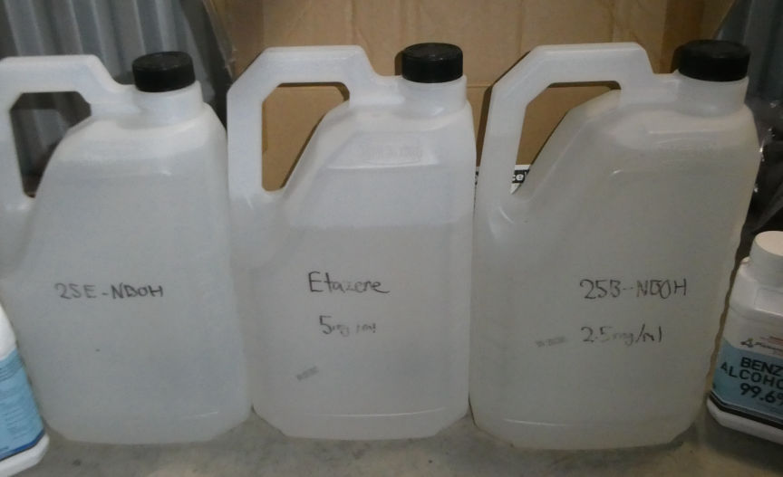
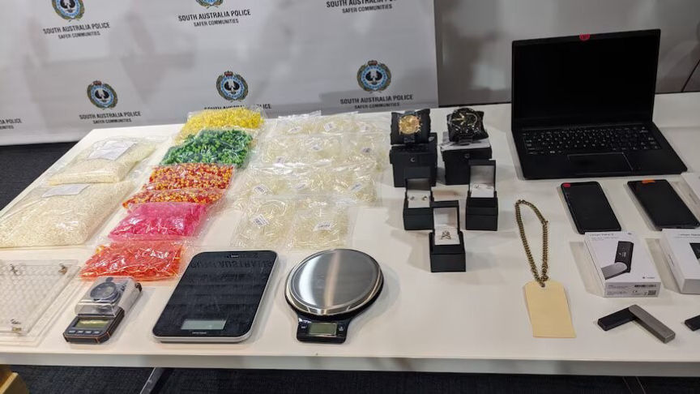
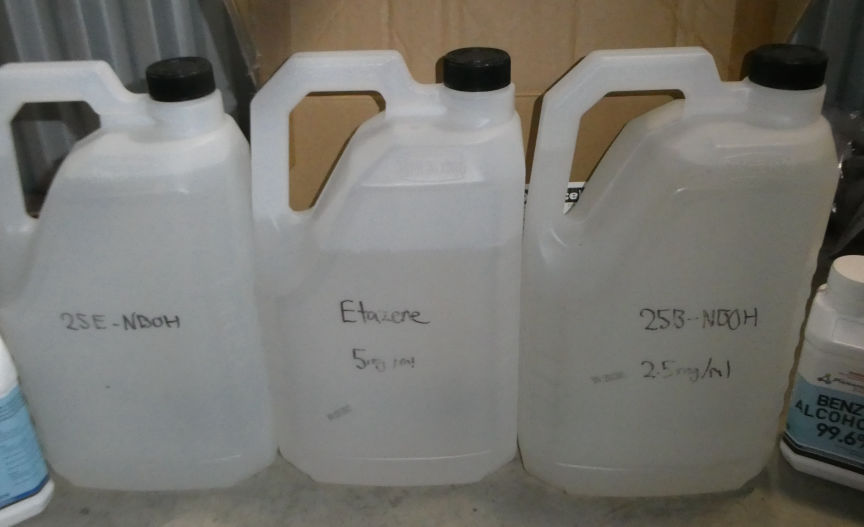
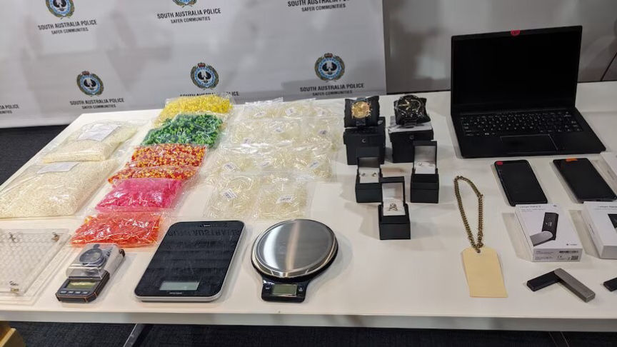

Australian Vendor "DopamineDealer" Busted
Police in South Australia arrested and charged a 25-year-old man suspected of distributing large quantities of drugs through the dark web and laundering the proceeds.

According to South Australia Police (SAPOL), the 25-year-old man from Adelaide used multiple vendor profiles on dark web marketplaces, including the profiles, "DrugsRus" and "DopamineDealer" on Abacus market, to distribute a variety of drugs, including the opiod, nitazene throughout Australia.
Investigators from the SAPOL's Cybercrime Investigation Section launched investigations into DopamineDealer's drug trafficking operation in early 2023 under an operation dubbed Operation Reveal.
The investigators were allegedly able to link the 25-year-old to cryptocurrency associated with the vendor profiles. The investigators established that he acquired the drugs in bulk and stored them in a storage unit from where he packaged them according to the orders he received.
The investigators arrested the 25-year-old suspect on September 20 and took over his vendor accounts. They also executed search warrants at his residence and two storage units associated with the drug trafficking operation.
The searches resulted in the seizure of a large quantity of drugs, including approximately 5 kilograms of nitazene. They also seized electronic devices, approximately $1.5 million in cryptocurrency, and tens of thousands in cash.

The suspect was charged with 19 counts of drug trafficking, five counts of trafficking in a commercial quantity of a controlled drug, money laundering, and possession of prescribed equipment.
He was remanded in custody pending trial.

According to South Australia Police (SAPOL), the 25-year-old man from Adelaide used multiple vendor profiles on dark web marketplaces, including the profiles, "DrugsRus" and "DopamineDealer" on Abacus market, to distribute a variety of drugs, including the opiod, nitazene throughout Australia.
Investigators from the SAPOL's Cybercrime Investigation Section launched investigations into DopamineDealer's drug trafficking operation in early 2023 under an operation dubbed Operation Reveal.
The investigators were allegedly able to link the 25-year-old to cryptocurrency associated with the vendor profiles. The investigators established that he acquired the drugs in bulk and stored them in a storage unit from where he packaged them according to the orders he received.
The investigators arrested the 25-year-old suspect on September 20 and took over his vendor accounts. They also executed search warrants at his residence and two storage units associated with the drug trafficking operation.
The searches resulted in the seizure of a large quantity of drugs, including approximately 5 kilograms of nitazene. They also seized electronic devices, approximately $1.5 million in cryptocurrency, and tens of thousands in cash.

Items seized from the searches
The suspect was charged with 19 counts of drug trafficking, five counts of trafficking in a commercial quantity of a controlled drug, money laundering, and possession of prescribed equipment.
He was remanded in custody pending trial.